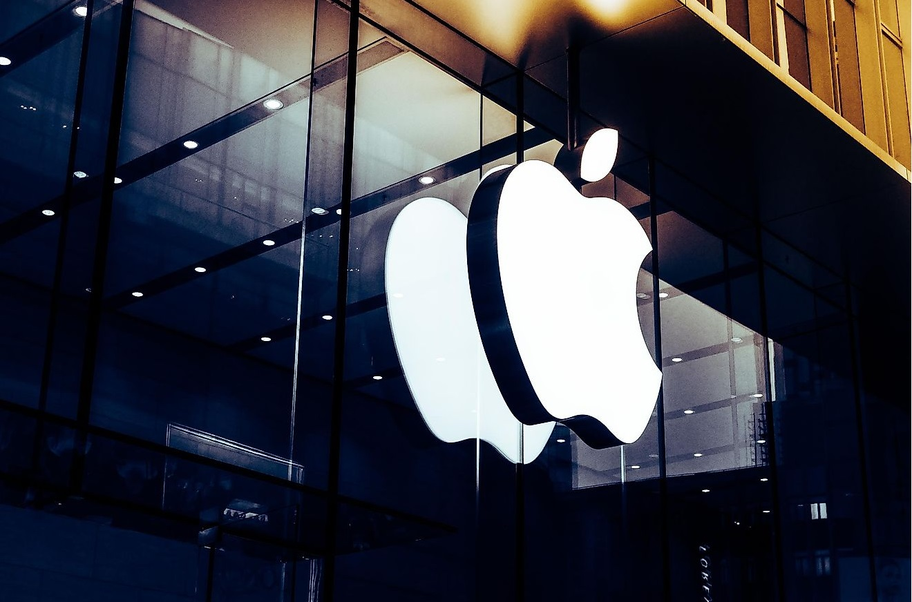
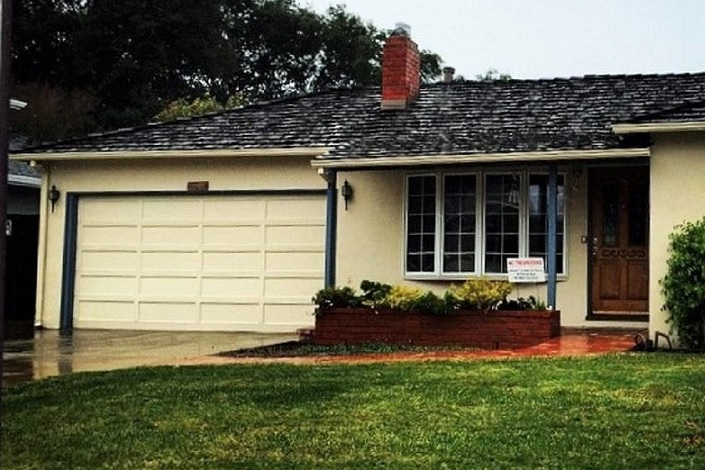
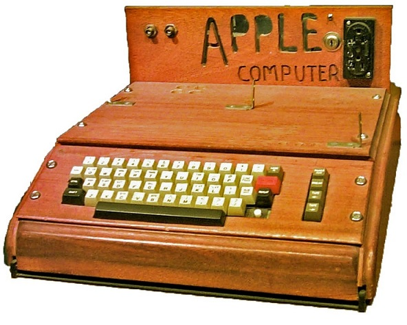

Tudo Sobre tecnologia
Tecnologia (do grego τέχνη — "técnica, arte, ofício" e -λογία — "estudo") é o conjunto de técnicas, habilidades, métodos e processos usados na produção de bens ou serviços, ou na realização de objetivos, como em investigações científicas. Tecnologia pode ser o conhecimento de técnicas, processos e similares.
curiosidades sobre a história da Apple
A Apple começou em uma garagem em 1976
A Apple foi fundada no dia 1º de abril de 1976, por Steve Jobs, Steve Wozniak e Ronald Wayne. A empresa começou em uma garagem em Los Altos, Califórnia, e inicialmente a ideia era apenas produzir computadores pessoais.
Steve Jobs era o líder de marketing da empresa, enquanto Steve Wozniak era o responsável pela engenharia. Já Ronald Wayne teve um papel menor na empresa e acabou vendendo sua participação por US$ 800 alguns dias após a fundação da Apple.
Embora hoje em dia o nome “Apple” já seja bastante comum, a história por trás desse nome é bem diversa. O responsável pela escolha foi Steve Jobs, e até hoje isso vem sendo motivos para especulações e teorias. Uma das versões mais populares é que Steve Jobs escolheu o nome Apple como uma homenagem à sua paixão pela fruta. Segundo relatos, Jobs estava em uma dieta restritiva na época e passava grande parte do tempo comendo maçãs. A escolha do nome, portanto, teria sido uma forma de refletir essa preferência pessoal.
Essa primeira versão bizarra até foi batizada em homenagem ao seu criador: seriam os Dandroids.
O primeiro computador pessoal da Apple foi vendido por US$666,66
O Apple I foi o primeiro computador pessoal produzido em massa pela Apple Inc. Foi criado por Steve Wozniak e lançado em 1976, vendido como um kit que exigia que o usuário montasse as peças e soldasse os componentes. Ele foi um grande avanço em relação aos computadores da época, já que apresentava um processador MOS Technology 6502 de 1 MHz, 4 KB de memória RAM e uma placa-mãe que permitia a conexão de um teclado e uma tela de vídeo..
O computador acabou sendo produzido de forma limitada, com cerca de 200 unidades sendo vendidas realmente. Ainda assim, o Apple I conseguiu estabelecer a reputação da Apple como uma empresa líder em tecnologia. A partir do Apple I, a Apple produziu vários computadores pessoais considerados de sucesso, incluindo o Apple II e o Macintosh.
A ideia principal da Irina era representar tudo graficamente com poucos traços e de forma mais chapada. O desenho também deveria gerar identificação rápida com quem o olha. Surgiu então o Bugdroid, o novo mascote do Android.

A principal inspiração para os traços do novo Bugdroid veio daqueles bonequinhos que ilustram portas de banheiro para indicar o gênero de cada porta. Conta a lenda que a artista estava criando em sua mesa no escritório do Google e olhou para o lado dos banheiros e a identificação foi imediata: simples, limpo, objetivo.
Quer aprender mais?
Outro assunto curioso em relação ao Android é que cada versão sempre foi nomeada em homenagem a um doce, em ordem alfabética a partir da versão 1.5 até a 9.0.
- 1.5 - Cupcake
- 1.6 - Donut
- 3.0 - Eclair
- 2.2 - Froyo
- 2.3 - Gingerbread
- 3.0 - Honeycomb
- 4.0 - Ice Cream Sandwich
- 4.1 - Jelly Bean
- 4.4 - KitKat
- 5.0 - Lolipop
- 6.0 - Marshmallow
- 7.0 - Nougat
- 8.0 - Oreo
- 9.0 - Pie
Infelizmente, o Android Q não existiu, pois o Google resolveu pôr fim a essa divertida prática e começou a usar numerações, o que deu origem ao Android 10.
Acesse aqui o site Android History para conhecer a sequência das versões "adocicadas" e o que cada uma trouxe para o sistema Android.
Então é isso! Espero que você tenha gostado do nosso artigo com essa curiosidade sobre o sistema Android e seu simpático mascote.